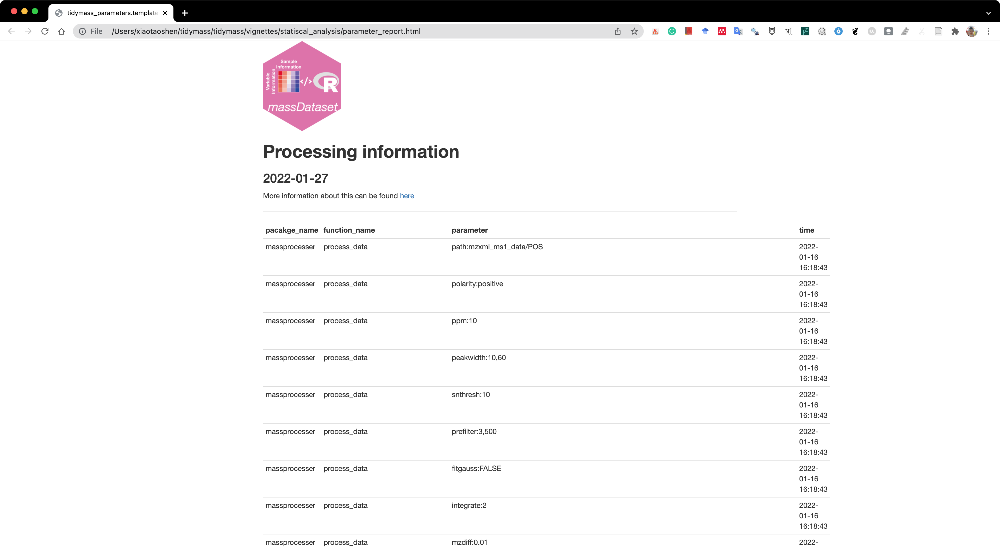
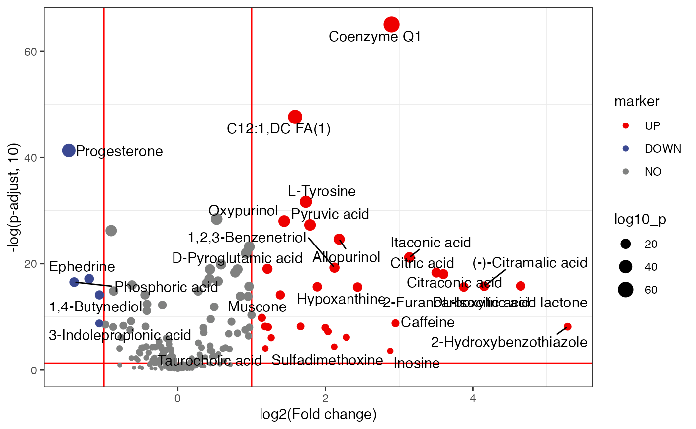

Statistical analysis
Xiaotao Shen (https://www.shenxt.info/)
Created on 2021-12-04 and updated on 2022-02-20
statistical_analysis.RmdData preparation
Now the positive mode and negative mode have been annotated respectively. Now we need to merge positive and negative mode data.
Remove the features without annotations
Positive mode.
object_pos2 =
object_pos2 %>%
activate_mass_dataset(what = "annotation_table") %>%
filter(!is.na(Level)) %>%
filter(Level == 1 | Level == 2)
object_pos2
#> --------------------
#> massdataset version: 0.99.1
#> --------------------
#> 1.expression_data:[ 206 x 259 data.frame]
#> 2.sample_info:[ 259 x 6 data.frame]
#> 3.variable_info:[ 206 x 6 data.frame]
#> 4.sample_info_note:[ 6 x 2 data.frame]
#> 5.variable_info_note:[ 6 x 2 data.frame]
#> 6.ms2_data:[ 1042 variables x 951 MS2 spectra]
#> --------------------
#> Processing information (extract_process_info())
#> create_mass_dataset ----------
#> Package Function.used Time
#> 1 massdataset create_mass_dataset() 2022-01-16 16:19:04
#> process_data ----------
#> Package Function.used Time
#> 1 massprocesser process_data 2022-01-16 16:18:43
#> mutate ----------
#> Package Function.used Time
#> 1 massdataset mutate() 2022-01-16 23:48:08
#> mutate_variable_na_freq ----------
#> Package Function.used Time
#> 1 massdataset mutate_variable_na_freq() 2022-01-18 09:11:43
#> 2 massdataset mutate_variable_na_freq() 2022-01-18 09:11:43
#> 3 massdataset mutate_variable_na_freq() 2022-01-18 09:11:43
#> filter ----------
#> Package Function.used Time
#> 1 massdataset filter() 2022-01-18 09:11:44
#> 2 massdataset filter() 2022-01-28 22:50:44
#> 3 massdataset filter() 2022-01-28 22:50:44
#> impute_mv ----------
#> Package Function.used Time
#> 1 masscleaner impute_mv() 2022-01-18 09:38:02
#> normalize_data ----------
#> Package Function.used Time
#> 1 masscleaner normalize_data() 2022-01-18 09:38:07
#> integrate_data ----------
#> Package Function.used Time
#> 1 masscleaner integrate_data() 2022-01-18 09:38:08
#> update_mass_dataset ----------
#> Package Function.used Time
#> 1 massdataset update_mass_dataset() 2022-01-19 21:53:01
#> mutate_ms2 ----------
#> Package Function.used Time
#> 1 massdataset mutate_ms2() 2022-01-19 21:53:36
#> annotate_metabolites_mass_dataset ----------
#> Package Function.used Time
#> 1 metid annotate_metabolites_mass_dataset() 2022-01-19 22:00:00
#> 2 metid annotate_metabolites_mass_dataset() 2022-01-19 22:23:24
#> 3 metid annotate_metabolites_mass_dataset() 2022-01-19 22:52:50Negative mode.
object_neg2 =
object_neg2 %>%
activate_mass_dataset(what = "annotation_table") %>%
filter(!is.na(Level)) %>%
filter(Level == 1 | Level == 2)
object_neg2
#> --------------------
#> massdataset version: 0.99.1
#> --------------------
#> 1.expression_data:[ 165 x 259 data.frame]
#> 2.sample_info:[ 259 x 6 data.frame]
#> 3.variable_info:[ 165 x 6 data.frame]
#> 4.sample_info_note:[ 6 x 2 data.frame]
#> 5.variable_info_note:[ 6 x 2 data.frame]
#> 6.ms2_data:[ 1092 variables x 988 MS2 spectra]
#> --------------------
#> Processing information (extract_process_info())
#> create_mass_dataset ----------
#> Package Function.used Time
#> 1 massdataset create_mass_dataset() 2022-01-16 16:20:02
#> process_data ----------
#> Package Function.used Time
#> 1 massprocesser process_data 2022-01-16 16:19:48
#> mutate ----------
#> Package Function.used Time
#> 1 massdataset mutate() 2022-01-16 23:48:08
#> mutate_variable_na_freq ----------
#> Package Function.used Time
#> 1 massdataset mutate_variable_na_freq() 2022-01-18 09:11:47
#> 2 massdataset mutate_variable_na_freq() 2022-01-18 09:11:47
#> 3 massdataset mutate_variable_na_freq() 2022-01-18 09:11:47
#> filter ----------
#> Package Function.used Time
#> 1 massdataset filter() 2022-01-18 09:11:47
#> 2 massdataset filter() 2022-01-28 22:50:45
#> 3 massdataset filter() 2022-01-28 22:50:45
#> impute_mv ----------
#> Package Function.used Time
#> 1 masscleaner impute_mv() 2022-01-18 09:38:06
#> normalize_data ----------
#> Package Function.used Time
#> 1 masscleaner normalize_data() 2022-01-18 09:50:47
#> integrate_data ----------
#> Package Function.used Time
#> 1 masscleaner integrate_data() 2022-01-18 09:50:47
#> update_mass_dataset ----------
#> Package Function.used Time
#> 1 massdataset update_mass_dataset() 2022-01-19 21:53:37
#> mutate_ms2 ----------
#> Package Function.used Time
#> 1 massdataset mutate_ms2() 2022-01-19 21:54:06
#> annotate_metabolites_mass_dataset ----------
#> Package Function.used Time
#> 1 metid annotate_metabolites_mass_dataset() 2022-01-19 22:57:19
#> 2 metid annotate_metabolites_mass_dataset() 2022-01-19 23:12:58
#> 3 metid annotate_metabolites_mass_dataset() 2022-01-19 23:40:34Merge data
We need to merge positive and negative mode data as one dataset.
head(colnames(object_pos2))
#> [1] "sample_06" "sample_103" "sample_11" "sample_112" "sample_117"
#> [6] "sample_12"
head(colnames(object_neg2))
#> [1] "sample_06" "sample_103" "sample_11" "sample_112" "sample_117"
#> [6] "sample_12"
object =
merge_mass_dataset(x = object_pos2,
y = object_neg2,
sample_direction = "inner",
variable_direction = "full",
sample_by = "sample_id",
variable_by = c("variable_id", "mz", "rt"))
object
#> --------------------
#> massdataset version: 0.99.4
#> --------------------
#> 1.expression_data:[ 371 x 259 data.frame]
#> 2.sample_info:[ 259 x 11 data.frame]
#> 3.variable_info:[ 371 x 9 data.frame]
#> 4.sample_info_note:[ 11 x 2 data.frame]
#> 5.variable_info_note:[ 9 x 2 data.frame]
#> 6.ms2_data:[ 2084 variables x 1902 MS2 spectra]
#> --------------------
#> Processing information (extract_process_info())
#> create_mass_dataset ----------
#> Package Function.used Time
#> 1 massdataset create_mass_dataset() 2022-01-16 16:19:04
#> process_data ----------
#> Package Function.used Time
#> 1 massprocesser process_data 2022-01-16 16:18:43
#> mutate ----------
#> Package Function.used Time
#> 1 massdataset mutate() 2022-01-16 23:48:08
#> mutate_variable_na_freq ----------
#> Package Function.used Time
#> 1 massdataset mutate_variable_na_freq() 2022-01-18 09:11:43
#> 2 massdataset mutate_variable_na_freq() 2022-01-18 09:11:43
#> 3 massdataset mutate_variable_na_freq() 2022-01-18 09:11:43
#> filter ----------
#> Package Function.used Time
#> 1 massdataset filter() 2022-01-18 09:11:44
#> 2 massdataset filter() 2022-01-28 22:50:44
#> 3 massdataset filter() 2022-01-28 22:50:44
#> impute_mv ----------
#> Package Function.used Time
#> 1 masscleaner impute_mv() 2022-01-18 09:38:02
#> normalize_data ----------
#> Package Function.used Time
#> 1 masscleaner normalize_data() 2022-01-18 09:38:07
#> integrate_data ----------
#> Package Function.used Time
#> 1 masscleaner integrate_data() 2022-01-18 09:38:08
#> update_mass_dataset ----------
#> Package Function.used Time
#> 1 massdataset update_mass_dataset() 2022-01-19 21:53:01
#> mutate_ms2 ----------
#> Package Function.used Time
#> 1 massdataset mutate_ms2() 2022-01-19 21:53:36
#> annotate_metabolites_mass_dataset ----------
#> Package Function.used Time
#> 1 metid annotate_metabolites_mass_dataset() 2022-01-19 22:00:00
#> 2 metid annotate_metabolites_mass_dataset() 2022-01-19 22:23:24
#> 3 metid annotate_metabolites_mass_dataset() 2022-01-19 22:52:50
#> create_mass_dataset ----------
#> Package Function.used Time
#> 1 massdataset create_mass_dataset() 2022-01-16 16:20:02
#> process_data ----------
#> Package Function.used Time
#> 1 massprocesser process_data 2022-01-16 16:19:48
#> mutate ----------
#> Package Function.used Time
#> 1 massdataset mutate() 2022-01-16 23:48:08
#> mutate_variable_na_freq ----------
#> Package Function.used Time
#> 1 massdataset mutate_variable_na_freq() 2022-01-18 09:11:47
#> 2 massdataset mutate_variable_na_freq() 2022-01-18 09:11:47
#> 3 massdataset mutate_variable_na_freq() 2022-01-18 09:11:47
#> filter ----------
#> Package Function.used Time
#> 1 massdataset filter() 2022-01-18 09:11:47
#> 2 massdataset filter() 2022-01-28 22:50:45
#> 3 massdataset filter() 2022-01-28 22:50:45
#> impute_mv ----------
#> Package Function.used Time
#> 1 masscleaner impute_mv() 2022-01-18 09:38:06
#> normalize_data ----------
#> Package Function.used Time
#> 1 masscleaner normalize_data() 2022-01-18 09:50:47
#> integrate_data ----------
#> Package Function.used Time
#> 1 masscleaner integrate_data() 2022-01-18 09:50:47
#> update_mass_dataset ----------
#> Package Function.used Time
#> 1 massdataset update_mass_dataset() 2022-01-19 21:53:37
#> mutate_ms2 ----------
#> Package Function.used Time
#> 1 massdataset mutate_ms2() 2022-01-19 21:54:06
#> annotate_metabolites_mass_dataset ----------
#> Package Function.used Time
#> 1 metid annotate_metabolites_mass_dataset() 2022-01-19 22:57:19
#> 2 metid annotate_metabolites_mass_dataset() 2022-01-19 23:12:58
#> 3 metid annotate_metabolites_mass_dataset() 2022-01-19 23:40:34
#> merge_mass_dataset ----------
#> Package Function.used Time
#> 1 massdataset merge_mass_dataset 2022-01-28 22:50:45Trace processing information of object
Then we can use the report_parameters() function to trace processing information of object.
All the analysis results will be placed in a folder named as statiscal_analysis.
dir.create(path = "statiscal_analysis", showWarnings = FALSE)
report_parameters(object = object, path = "statiscal_analysis/")
#> processing file: tidymass_parameters.template.Rmd
#> output file: tidymass_parameters.template.knit.md
#> /Applications/RStudio.app/Contents/MacOS/pandoc/pandoc +RTS -K512m -RTS tidymass_parameters.template.knit.md --to html4 --from markdown+autolink_bare_uris+tex_math_single_backslash --output tidymass_parameters.template.html --lua-filter /Library/Frameworks/R.framework/Versions/library/rmarkdown/rmarkdown/lua/pagebreak.lua --lua-filter /Library/Frameworks/R.framework/Versions/library/rmarkdown/rmarkdown/lua/latex-div.lua --self-contained --variable bs3=TRUE --standalone --section-divs --template /Library/Frameworks/R.framework/Versions/library/rmarkdown/rmd/h/default.html --no-highlight --variable highlightjs=1 --variable theme=bootstrap --include-in-header /var/folders/m8/z8rq9r453dn9rk4zx4cw5_5h0000gn/T//Rtmp8hTtHp/rmarkdown-str30ae2e5687fb.html --mathjax --variable 'mathjax-url:https://mathjax.rstudio.com/latest/MathJax.js?config=TeX-AMS-MML_HTMLorMML'
#>
#> Output created: tidymass_parameters.template.html
#> Done.
#> A html format file named as parameter_report.html will be generated.

Remove redundant metabolites
Remove the redundant annotated metabolites bases on Level and score.
Differential expression metabolites
Calculate the fold changes.
control_sample_id =
object %>%
activate_mass_dataset(what = "sample_info") %>%
filter(group == "Control") %>%
pull(sample_id)
case_sample_id =
object %>%
activate_mass_dataset(what = "sample_info") %>%
filter(group == "Case") %>%
pull(sample_id)
object <-
mutate_fc(object = object,
control_sample_id = control_sample_id,
case_sample_id = case_sample_id,
mean_median = "mean")
#> 110 control samples.
#> 110 case samples.
#> Calculate p values.
object <-
mutate_p_value(
object = object,
control_sample_id = control_sample_id,
case_sample_id = case_sample_id,
method = "t.test",
p_adjust_methods = "BH"
)
#> 110 control samples.
#> 110 case samples.
#> Volcano plot.
volcano_plot(object = object,
add_text = TRUE,
text_from = "Compound.name",
point_size_scale = "p_value") +
scale_size_continuous(range = c(0.5, 5))
Output result
Output the differential expression metabolites.
differential_metabolites <-
extract_variable_info(object = object) %>%
filter(fc > 2 | fc < 0.5) %>%
filter(p_value_adjust < 0.05)
readr::write_csv(differential_metabolites,
file = "statiscal_analysis/differential_metabolites.csv")Save result for next analysis.
save(object, file = "statiscal_analysis/object")Session information
sessionInfo()
#> R version 4.1.2 (2021-11-01)
#> Platform: x86_64-apple-darwin17.0 (64-bit)
#> Running under: macOS Big Sur 10.16
#>
#> Matrix products: default
#> BLAS: /Library/Frameworks/R.framework/Versions/4.1/Resources/lib/libRblas.0.dylib
#> LAPACK: /Library/Frameworks/R.framework/Versions/4.1/Resources/lib/libRlapack.dylib
#>
#> locale:
#> [1] en_US.UTF-8/en_US.UTF-8/en_US.UTF-8/C/en_US.UTF-8/en_US.UTF-8
#>
#> attached base packages:
#> [1] stats4 stats graphics grDevices utils datasets methods
#> [8] base
#>
#> other attached packages:
#> [1] knitr_1.37 forcats_0.5.1 stringr_1.4.0
#> [4] purrr_0.3.4 readr_2.1.1 tidyr_1.1.4
#> [7] tibble_3.1.6 tidyverse_1.3.1 dplyr_1.0.7
#> [10] metid_1.2.1 metpath_0.0.1 massstat_0.99.1
#> [13] ggfortify_0.4.14 ggplot2_3.3.5 massqc_0.9.1
#> [16] tinytools_0.9.1 masscleaner_0.9.2 xcms_3.17.1
#> [19] MSnbase_2.21.3 ProtGenerics_1.27.2 S4Vectors_0.33.10
#> [22] mzR_2.29.1 Rcpp_1.0.7 Biobase_2.55.0
#> [25] BiocGenerics_0.41.2 BiocParallel_1.29.10 massprocesser_0.9.2
#> [28] magrittr_2.0.1 masstools_0.99.3 massdataset_0.99.4
#> [31] tidymass_0.9.1
#>
#> loaded via a namespace (and not attached):
#> [1] ragg_1.2.1 missForest_1.4
#> [3] bit64_4.0.5 DelayedArray_0.21.2
#> [5] data.table_1.14.2 KEGGREST_1.35.0
#> [7] RCurl_1.98-1.5 doParallel_1.0.16
#> [9] generics_0.1.1 snow_0.4-4
#> [11] leaflet_2.0.4.1 preprocessCore_1.57.0
#> [13] callr_3.7.0 usethis_2.1.5
#> [15] RANN_2.6.1 proxy_0.4-26
#> [17] future_1.23.0 bit_4.0.4
#> [19] tzdb_0.2.0 xml2_1.3.3
#> [21] lubridate_1.8.0 ggsci_2.9
#> [23] SummarizedExperiment_1.25.3 assertthat_0.2.1
#> [25] viridis_0.6.2 xfun_0.29
#> [27] hms_1.1.1 jquerylib_0.1.4
#> [29] evaluate_0.14 DEoptimR_1.0-10
#> [31] fansi_1.0.0 dbplyr_2.1.1
#> [33] readxl_1.3.1 igraph_1.2.6
#> [35] DBI_1.1.2 htmlwidgets_1.5.4
#> [37] MsFeatures_1.3.0 ellipsis_0.3.2
#> [39] crosstalk_1.2.0 backports_1.4.1
#> [41] ggcorrplot_0.1.3 MatrixGenerics_1.7.0
#> [43] vctrs_0.3.8 remotes_2.4.2
#> [45] cachem_1.0.6 withr_2.4.3
#> [47] ggforce_0.3.3 itertools_0.1-3
#> [49] robustbase_0.93-8 vroom_1.5.7
#> [51] prettyunits_1.1.1 cluster_2.1.2
#> [53] lazyeval_0.2.2 crayon_1.4.2
#> [55] pkgconfig_2.0.3 tweenr_1.0.2
#> [57] GenomeInfoDb_1.31.1 pkgload_1.2.4
#> [59] devtools_2.4.3 rlang_0.4.12
#> [61] globals_0.14.0 lifecycle_1.0.1
#> [63] affyio_1.65.0 MassSpecWavelet_1.61.0
#> [65] modelr_0.1.8 cellranger_1.1.0
#> [67] randomForest_4.6-14 rprojroot_2.0.2
#> [69] polyclip_1.10-0 matrixStats_0.61.0
#> [71] Matrix_1.3-4 reprex_2.0.1
#> [73] GlobalOptions_0.1.2 processx_3.5.2
#> [75] png_0.1-7 viridisLite_0.4.0
#> [77] rjson_0.2.21 clisymbols_1.2.0
#> [79] bitops_1.0-7 pander_0.6.4
#> [81] Biostrings_2.63.1 shape_1.4.6
#> [83] parallelly_1.30.0 robust_0.6-1
#> [85] stevedore_0.9.4 gridGraphics_0.5-1
#> [87] scales_1.1.1 memoise_2.0.1
#> [89] plyr_1.8.6 zlibbioc_1.41.0
#> [91] compiler_4.1.2 RColorBrewer_1.1-2
#> [93] pcaMethods_1.87.0 clue_0.3-60
#> [95] rrcov_1.6-0 cli_3.1.0
#> [97] affy_1.73.0 XVector_0.35.0
#> [99] listenv_0.8.0 patchwork_1.1.1
#> [101] pbapply_1.5-0 ps_1.6.0
#> [103] MASS_7.3-55 tidyselect_1.1.1
#> [105] vsn_3.63.0 stringi_1.7.6
#> [107] textshaping_0.3.6 yaml_2.2.1
#> [109] MALDIquant_1.21 ggrepel_0.9.1
#> [111] grid_4.1.2 sass_0.4.0
#> [113] tools_4.1.2 parallel_4.1.2
#> [115] circlize_0.4.14 rstudioapi_0.13
#> [117] MsCoreUtils_1.7.1 foreach_1.5.1
#> [119] gridExtra_2.3 farver_2.1.0
#> [121] mzID_1.33.0 ggraph_2.0.5
#> [123] digest_0.6.29 BiocManager_1.30.16
#> [125] GenomicRanges_1.47.6 broom_0.7.11
#> [127] ncdf4_1.17 httr_1.4.2
#> [129] ComplexHeatmap_2.11.0 colorspace_2.0-2
#> [131] rvest_1.0.2 XML_3.99-0.8
#> [133] fs_1.5.2 IRanges_2.29.1
#> [135] massconverter_0.99.1 yulab.utils_0.0.4
#> [137] pkgdown_2.0.1 graphlayouts_0.8.0
#> [139] ggplotify_0.1.0 plotly_4.10.0
#> [141] sessioninfo_1.2.2 systemfonts_1.0.3
#> [143] fit.models_0.64 jsonlite_1.7.2
#> [145] tidygraph_1.2.0 testthat_3.1.1
#> [147] R6_2.5.1 pillar_1.6.4
#> [149] htmltools_0.5.2 glue_1.6.0
#> [151] fastmap_1.1.0 class_7.3-20
#> [153] codetools_0.2-18 pkgbuild_1.3.1
#> [155] pcaPP_1.9-74 mvtnorm_1.1-2
#> [157] furrr_0.2.3 utf8_1.2.2
#> [159] lattice_0.20-45 bslib_0.3.1
#> [161] curl_4.3.2 zip_2.2.0
#> [163] openxlsx_4.2.5 limma_3.51.2
#> [165] rmarkdown_2.11 desc_1.4.0
#> [167] munsell_0.5.0 e1071_1.7-9
#> [169] GetoptLong_1.0.5 GenomeInfoDbData_1.2.7
#> [171] iterators_1.0.13 impute_1.69.0
#> [173] haven_2.4.3 gtable_0.3.0